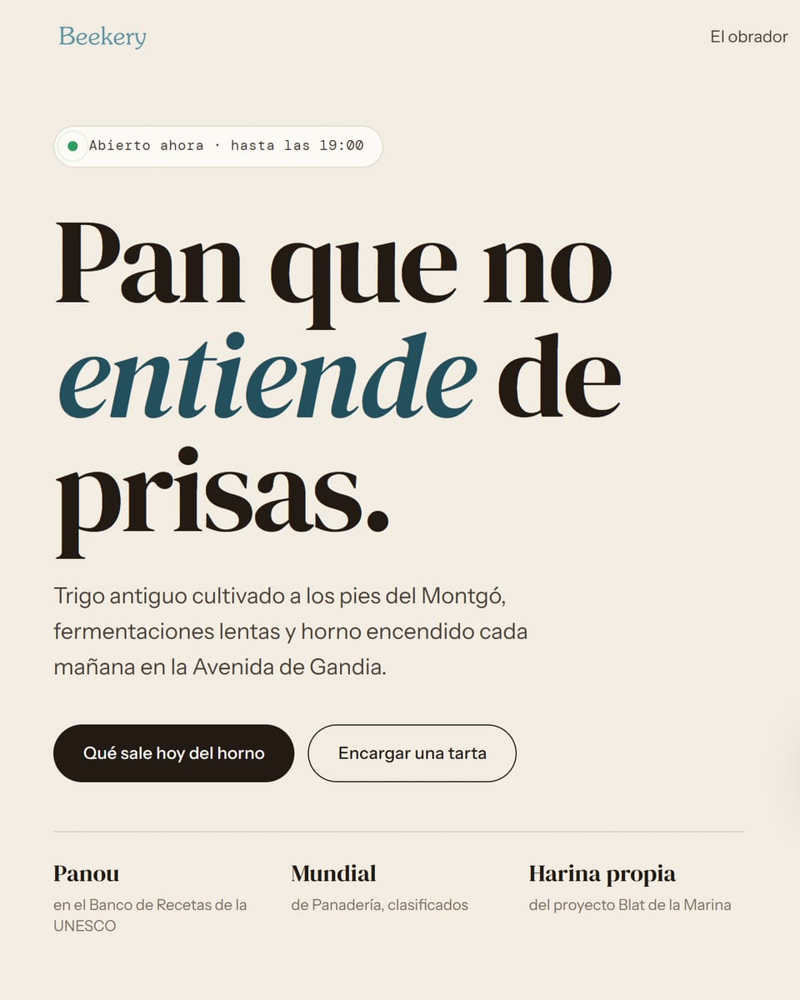
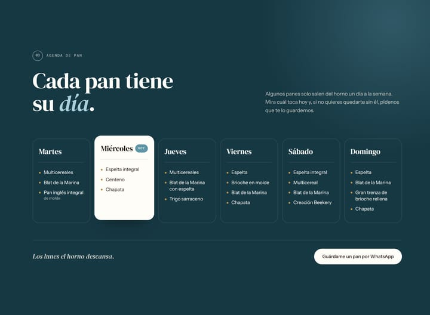
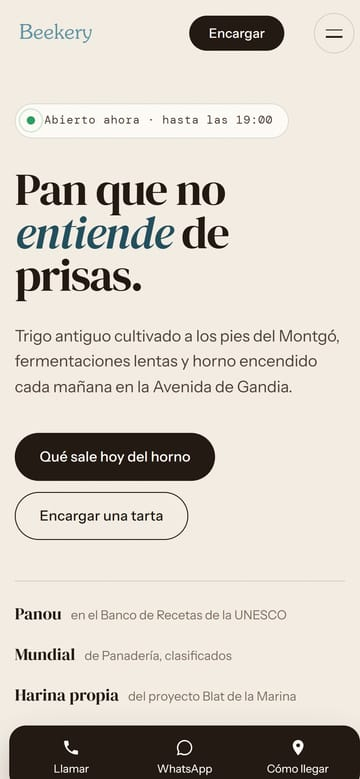

Beekery
Un obrador donde cada pan sale un día concreto. La web tenía que decir cuál toca hoy.
Exploración hecha por iniciativa propia, sin encargo ni relación comercial con el obrador. Los datos proceden de su información pública. La marca y sus contenidos pertenecen a sus propietarios.
- Negocio
- Obrador de pan y pastelería en la Avenida de Gandia, Dénia
- Acción principal
- Venir hoy o encargar una tarta
- Qué incluye
- Concepto, web de una página, agenda de pan y encargos por WhatsApp
- Año
- 2026

«Abierto ahora», en directo
Se calcula con el horario y la hora de Dénia. Si está cerrado, dice cuándo vuelve a abrir.
Una frase con postura
«Pan que no entiende de prisas» sale de su propia historia: fermentaciones lentas y trabajo diario.
Dos motivos, dos botones
Se entra a la web de un obrador para saber qué pan hay hoy o para encargar una tarta. Nada más compite con eso.
Credenciales reales
Su receta del Panou en el Banco de Recetas de la UNESCO, un mundial de panadería y harina propia. Sin inflar nada.
La pregunta de partida
Beekery es un obrador artesano de Dénia: fermentaciones lentas, trigo antiguo de la Marina Alta y tartas por encargo.
Tiene una particularidad que casi ninguna web de panadería resuelve: muchos de sus panes solo salen un día a la semana. El de espelta integral, los miércoles; la trenza de brioche, los domingos. Quien no lo sabe va el día que no toca y se vuelve sin su pan.
La pregunta era cómo convertir eso, que parece un problema, en la razón para volver.
Lo que tiene de especial
- Una agenda de pan. Cada día de la semana salen panes distintos, y los lunes el horno descansa.
- Su propia harina. Forman parte de Blat de la Marina, un proyecto que recupera variedades antiguas de trigo cultivadas y molidas en la comarca.
- Oficio con historia. Dos hermanos, una receta del Panou en el Banco de Recetas de la UNESCO y una clasificación para un mundial de panadería.
- Los encargos, por WhatsApp. Las tartas se piden con antelación, y el canal natural del cliente de barrio es el WhatsApp.
Fuente: información pública del obrador (web y redes sociales).
La idea: cada pan tiene su día
La web se organiza alrededor del calendario del horno. Una agenda semanal muestra qué sale cada día y destaca el de hoy, y un aviso en la portada dice si está abierto ahora.
La estética sale del propio producto: el color de la harina, la corteza oscura del pan y el azul de su marca. Los horarios van en una tipografía monoespaciada, como la pizarra de un obrador.
harinacortezaazul marcatrigo
Tipografías: DM Serif Display para titulares con carácter, Instrument Sans para leer y DM Mono para horarios y etiquetas.
La agenda de pan

Un calendario, no una lista
Los panes se ordenan por el día en que salen, que es como los piensa quien va a comprar.
Hoy, destacado solo
La tarjeta del día se levanta y lleva la etiqueta «Hoy» según la fecha. Nadie tiene que actualizarla.
El cierre, con gracia
«Los lunes el horno descansa»: el día de cierre dicho en la voz del obrador.
«Guárdame un pan»
Un botón abre WhatsApp con el mensaje escrito para que te reserven el pan del día.
Encargar una tarta, sin formularios fríos
El formulario de encargos no envía nada a ningún servidor: prepara el pedido y lo abre en WhatsApp, listo para mandar. El obrador confirma por el mismo canal que ya usa con sus clientes.
- Elige la tartao «otra cosa, te lo cuento»
- Día y racionesy su nombre
- Se abre WhatsAppcon el pedido ya escrito
- El obrador confirmadisponibilidad, por el mismo chat
En el móvil

Una barra para el camino
Llamar, WhatsApp y Cómo llegar, fijos abajo: lo que se usa con el móvil en la mano.
«Encargar», arriba
Junto al menú, el botón de encargos acompaña toda la visita.
Credenciales en lista
En escritorio van en tres columnas; en el móvil, en líneas que se leen de un vistazo.
Lo que habría que validar
- Horarios, panes de cada día y carta, tomados de su información pública.
- Las fotografías de la propuesta son del propio obrador: se usaron solo como referencia y no se publican aquí.
- El texto de su historia, que habría que revisar con ellos.
¿Tu negocio funciona de una forma que tu web no explica?
Cuéntamelo. Muchas veces lo que parece un detalle es justo lo que hace volver a tus clientes.
Cuéntame tu negocio